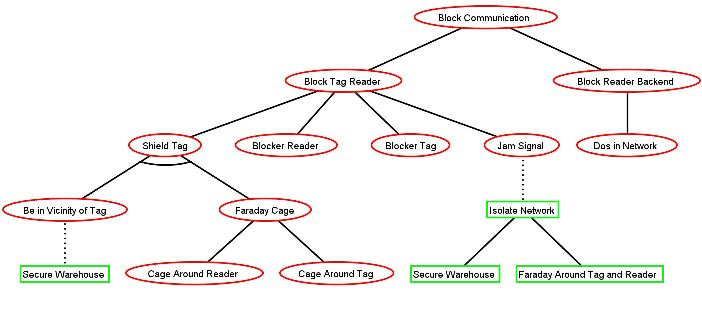

Glasir
Modelize and Analyse the security of your systems. Easier. Faster.
What is Glasir?
Glasir is an open-source software dedicated to the security analysis of your systems. With Glasir you would be able to localise your system weak-points using a formal representation named "Attack-Defense Tree"


What are "ADTrees" ?
"ADTree" is short for "Attack-Defense Tree", a graphical way to represent the possible attacks and/or defences concerning a given system. ADTrees use a very unique formal representation, starting from the attacker rather than from the system to defend, to be the more accurate giving a specific type of attacker.
ADTool
ADtool is a software developped by researchers in order to computerise ADTrees. Glasir uses this tool as an ADTree viewer.

How to analyze ADTrees ?
Glasir contains several tools for modelization and analyse of Systems. Three Analyse modules are available in Glasir for this purpose : the Function Editor, which allows you to exprimate compromises between attributes of the attack, the Filter, to highlight the possible attacks giving a specific attacker, and the Optimizer, to localise the most effective, and so probable, attack on your systems.